CVPR 2026 Opens with Emotional Tribute to Jian Sun; GDUT Undergraduates Claim Top Honor Using Antique Titan GPUs

A faint gleam amid the age of computational hegemony: undergraduates from GDUT secured a major conference prize using outdated Titan GPUs. 'A decade to nurture a tree' — the computer vision community conferred its highest accolade upon the late trailblazer Jian Sun.
On June 5 local time, following two days of workshop sessions, the main program of CVPR 2026 (IEEE Conference on Computer Vision and Pattern Recognition), the leading international forum for computer vision and pattern recognition research, commenced in Denver, Colorado.
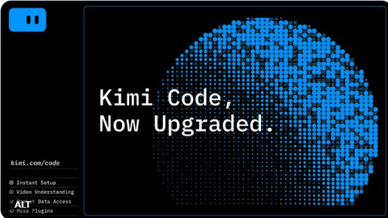
01
From the Physical World to the Visual Stage,
Two Cities, a 'Seamless Transition'
This year's research community has been unusually active. Across the preceding workshop program — from the WDFM-EAI (Embodied AI Foundation Model Deployment) track examining Vision-Language-Action (VLA) model deployment in autonomous driving and robotics, to the embodied intelligence forum that hosted the live ManipArena Competition — an unequivocal message was delivered to the industry: computer vision has exited the screen-bound comfort zone of 'bounding-box recognition' and is now moving decisively into the physically grounded 3D world.
If the workshops and industrial exhibits of the preceding two days foreshadowed the intensity around 'embodied intelligence' and 'multimodality,' the main conference opening on June 5 constituted a comprehensive showcase of foundational computer vision theory and grassroots innovation. As thousands of researchers streamed into the Denver Convention Center, a historic inflection point for the field was collectively witnessed.
During the opening ceremony, the organizing committee released a series of unprecedented metrics, affirming that computer vision remains the largest and most vigorous research domain in artificial intelligence:
▪ Record-breaking attendance: 44,011 authors from 97 countries and regions participated, alongside 25,149 reviewers and 909 Area Chairs (ACs).
▪ China's commanding lead: By country of origin, China (CN) ranked first with 23,233 authors — nearly three times that of the runner-up United States (US, 7,556). China also led in reviewer contributions with 10,687.
▪ Submissions hit a record high: 16,092 valid papers were received, representing a 24% increase over CVPR 2025. Of these, 4,071 were accepted, maintaining a stable acceptance rate of roughly 25.3%.
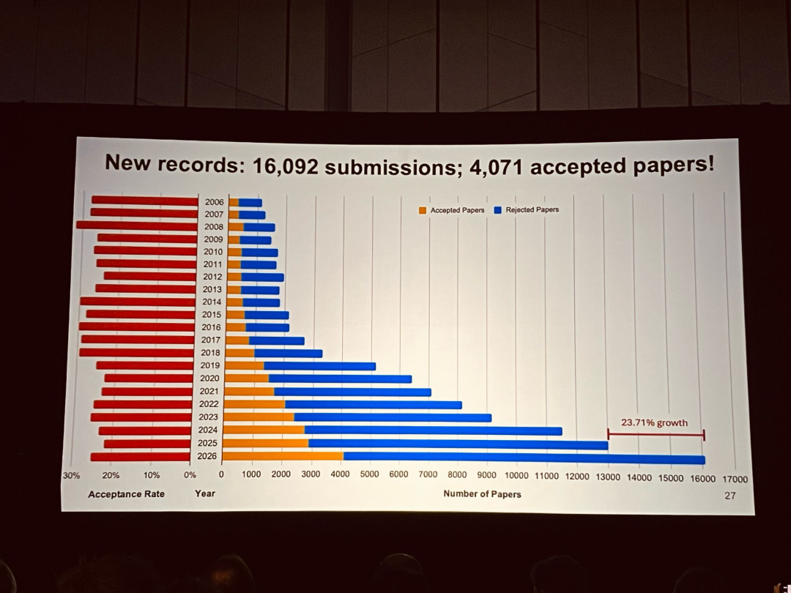
▪ Based on the topical distribution data released at the conference, 'Image and Video Synthesis and Generation,' 'Vision, Language, and Reasoning,' and '3D Vision' emerged as the most active research tracks. Generative AI powered by large models and 3D scene reconstruction are redefining the frontiers of computer vision at an accelerating rate.
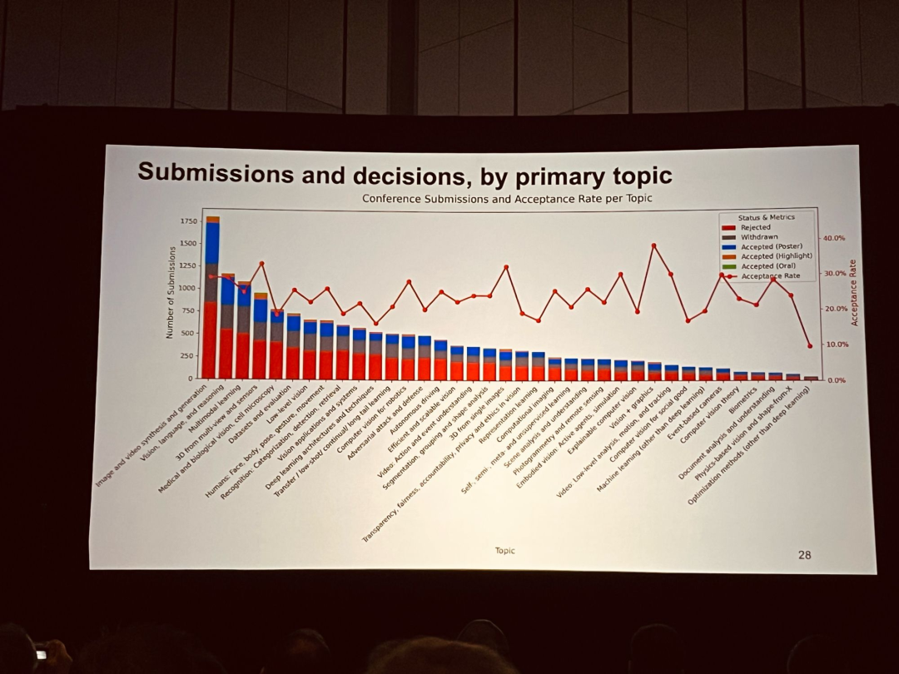

02
Best Paper Awards:
Elite Institutions Compete at the Highest Level; GDUT Undergraduates Write the Most Inspirational Narrative
The most closely watched Best Paper session also offered no shortage of compelling moments:
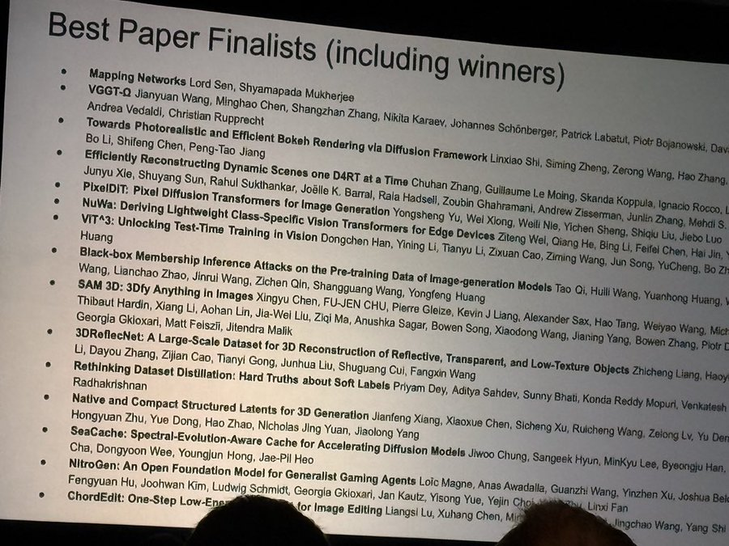
▎ [Best Paper]
▪ Winner: Efficiently Reconstructing Dynamic Scenes One D4RT at a Time
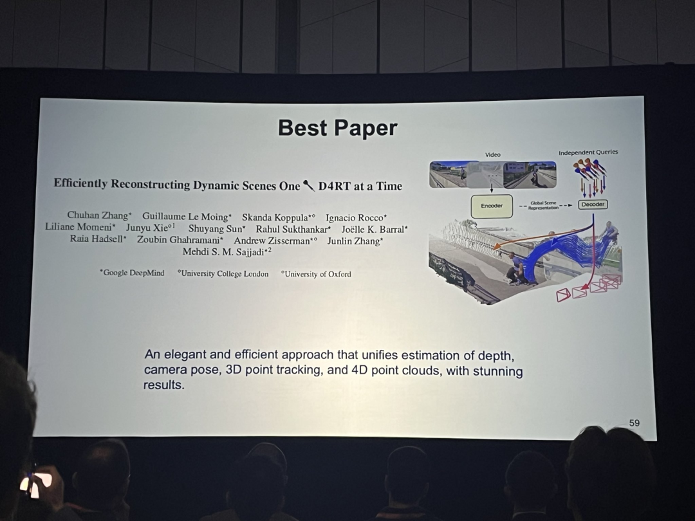
Awarded to a collaboration among Google DeepMind, University College London (UCL), and the University of Oxford, the paper introduces an elegant, high-efficiency framework that achieves a remarkable unification of depth estimation, camera pose, 3D point cloud tracking, and 4D point cloud reconstruction.
▎ [Best Paper Honorable Mention]
▪ NitroGen: An Open Foundation Model for Generalist Gaming Agents
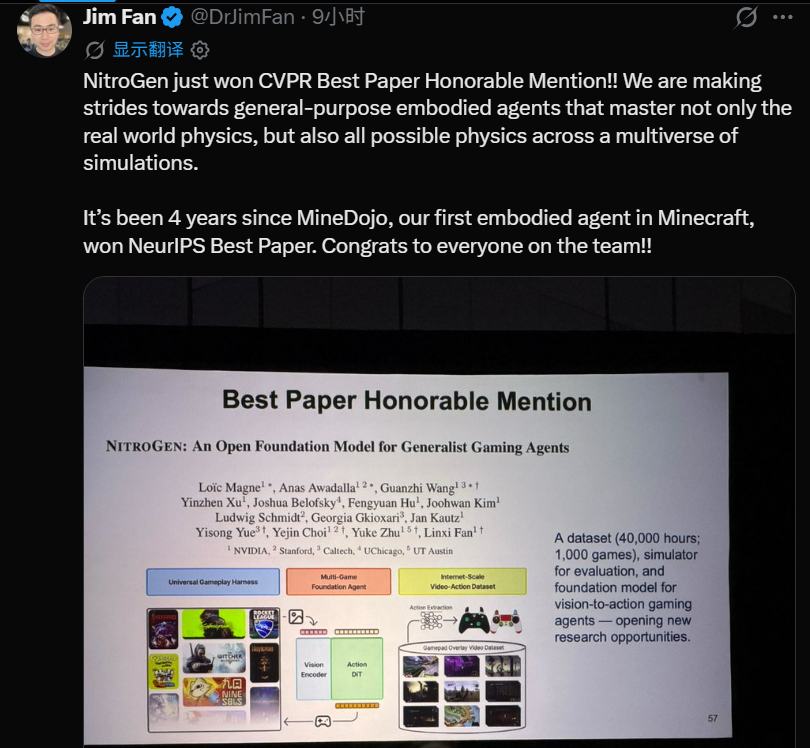
Awarded to the team led by Jim Fan, a leading research scientist at NVIDIA. Fan noted on Twitter that the recognition represents another significant advance toward general-purpose embodied agents, following MineDojo's award four years ago.
▪ SAM3D: 3Dfy Anything in Images (developed by Meta Superintelligence Labs).
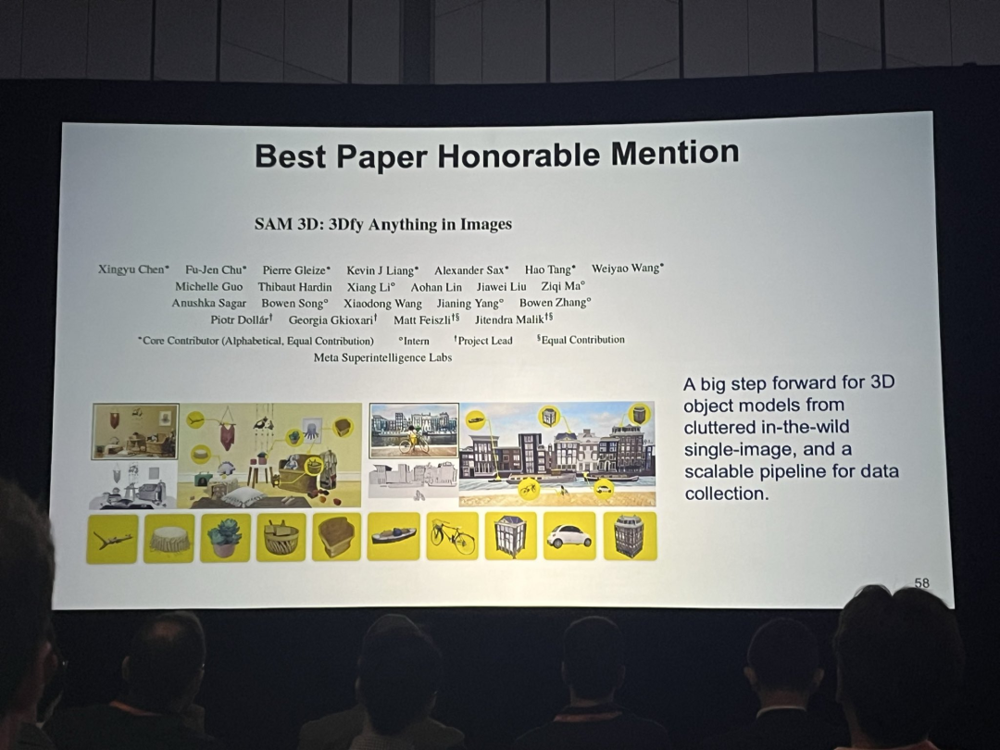
▎ [Best Student Paper and the Most Compelling Cinderella Story]
The Best Student Paper was presented to Native and Compact Structured Latents for 3D Generation, a notable 3D generation contribution co-authored by researchers from Tsinghua University, Microsoft Research (MSR), the University of Science and Technology of China, and affiliated institutions.
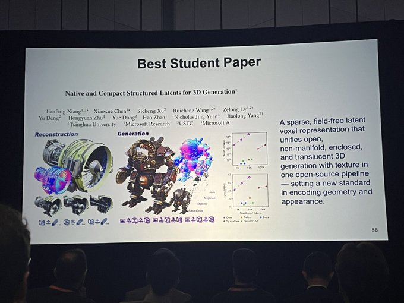
The submission that drew the most acclaim from China's research community as 'genuinely inspirational' was ChordEdit: One-Step Low-Energy Transport for Image Editing, which earned the Best Student Paper Honorable Mention.
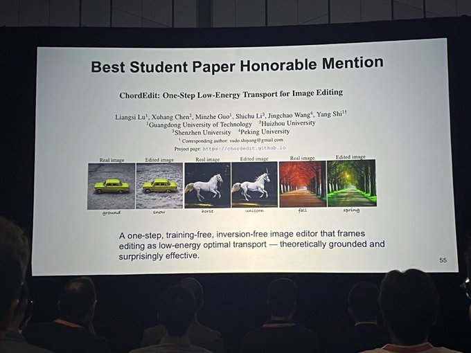
Both the first author and the corresponding author of this significant paper are undergraduates at Guangdong University of Technology (GDUT), in a collaboration involving GDUT, Huizhou University, Shenzhen University, and Peking University. In an age dominated by computational supremacy — where major technology companies and top-tier universities rely on clusters of thousands of GPUs to produce results through sheer scale — this undergraduate team conducted its experiments on 'vintage Titan GPUs.'
It is, by any measure, the most compelling research narrative of this year's CVPR — a statement to the global community that computational resources, while important, are not decisive. In the academic arena, genuine passion, elegant design (a training-free, one-step image editing algorithm), and persistent ingenuity can still transcend resource disparities and command the world's respect.

03
Achievement Awards:
A Room Full of Emotion: The CV Community Demonstrates It Has Not Forgotten Jian Sun
The opening ceremony's peak moments unquestionably centered on the PAMI Young Researcher Award, the Thomas Huang Memorial Prize, and the Longuet-Higgins Prize (Test of Time Award) — the latter carrying exceptional weight.
▎ The Thomas Huang Memorial Prize was presented to Noah Snavely of Cornell University.
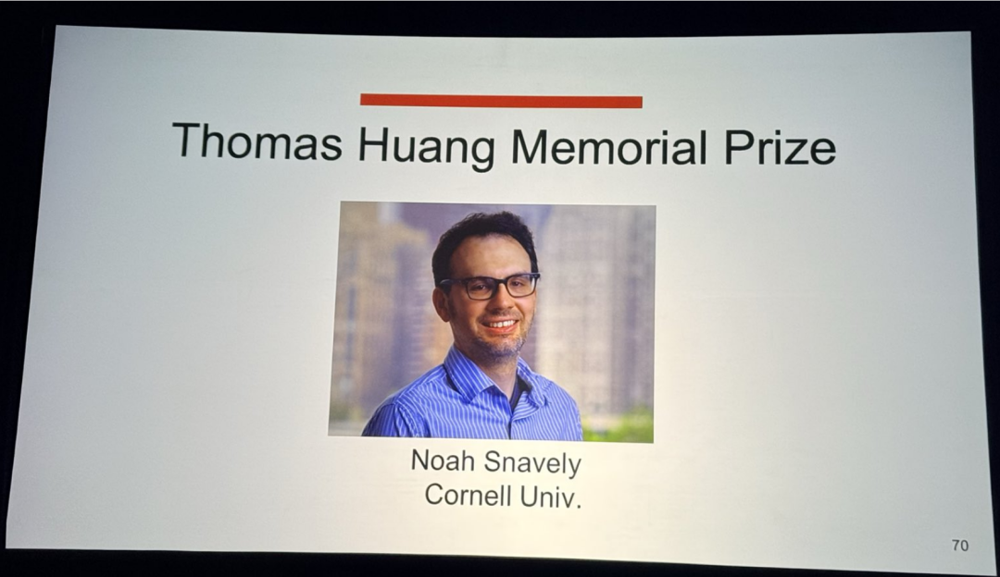
▎ The Young Researcher Award was claimed by Deepak Pathak (Carnegie Mellon University) and Vincent Sitzmann (Massachusetts Institute of Technology).
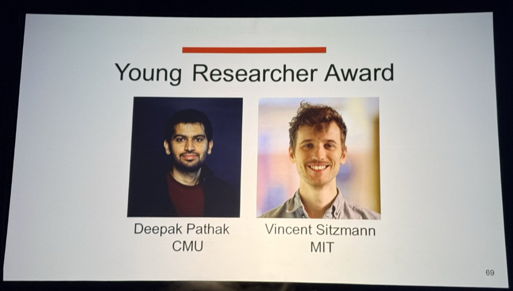
The most emotionally charged moment arrived with the presentation of the Longuet-Higgins Prize, awarded to papers that have significantly influenced computer vision over the preceding decade. This year's recipients were two landmark 2016 publications that fundamentally reshaped the trajectory of artificial intelligence:
ResNet: Deep Residual Learning for Image Recognition (Kaiming He, Xiangyu Zhang, Shaoqing Ren, Jian Sun)
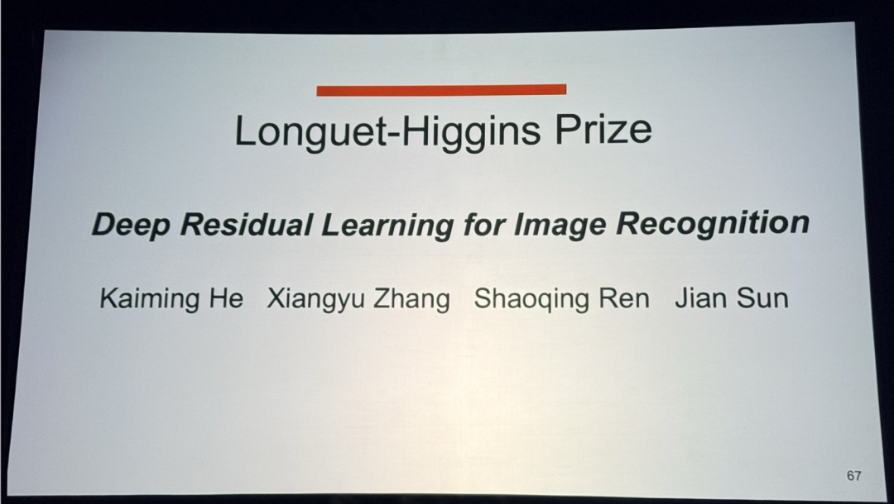
The original YOLO paper: You Only Look Once: Unified, Real-Time Object Detection (Joseph Redmon, Santosh Divvala, Ross Girshick, Ali Farhadi)
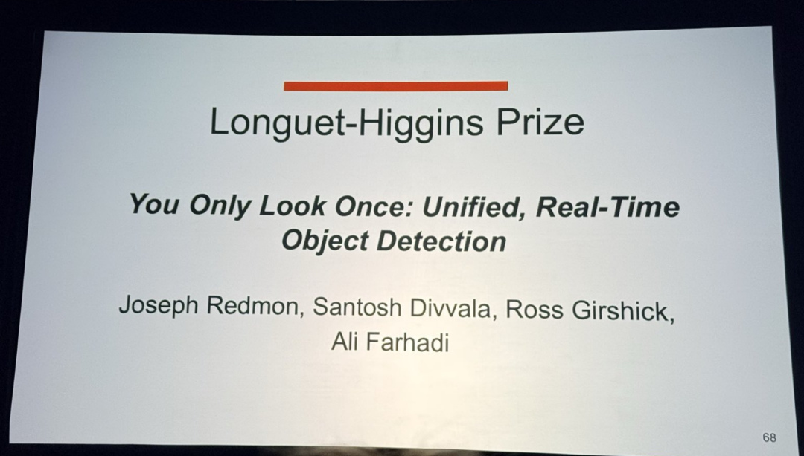
Dr. Jian Sun, former chief scientist at Megvii and a preeminent figure in China's AI landscape, passed away unexpectedly in 2022. By conferring its highest distinction, the computer vision community delivered a clear message: his legacy endures. A decade ago, Sun guided the team that introduced ResNet, resolving the fundamental challenge of training deep neural networks and establishing the bedrock upon which today's large models — including Transformer architectures — are built. Ten years on, his name and contributions continue to serve as a guiding light for generations of researchers to come.

04
Visit Leiphone's CVPR 2026 Coverage Hub
From a record 16,092 submissions to the sweeping dominance of Chinese researchers across every category — from the collective remembrance ignited by ResNet's Test of Time Award to the GDUT undergraduates' Honorable Mention secured on legacy GPUs — the CVPR 2026 opening ceremony transcended a mere technical celebration, offering a testament to human character and scholarly perseverance.
In the days ahead, the conference program will feature an intensive lineup of oral sessions and spotlight forums. How are end-to-end models progressing? Where is 3D generation headed next? To enable readers to track these frontier developments in real time, Leiphone (WeChat ID: Leiphone) has launched the [CVPR 2026 Coverage Hub]: https://www.leiphone.com/special/491/202604/69e83f3248221.html
Ongoing coverage will include first-hand on-site dispatches, in-depth engineering analyses of featured oral papers, and exclusive interviews with leading Chinese researchers. Readers are encouraged to follow Leiphone and stay aligned with the global forefront of artificial intelligence.
Where to Access Detailed Coverage of CVPR's Key [Talks/Papers]?
To enable developers, entrepreneurs, and investors in China to capture the full breadth of CVPR 2026 insights without time-zone constraints, Leiphone has introduced the [CVPR 2026 In-Depth Hub].
The hub offers comprehensive coverage of featured oral paper analyses and exclusive interviews with leading Chinese researchers, and will be updated continuously with on-site conference dispatches. Readers are encouraged to follow Leiphone and remain engaged with the global AI research forefront.